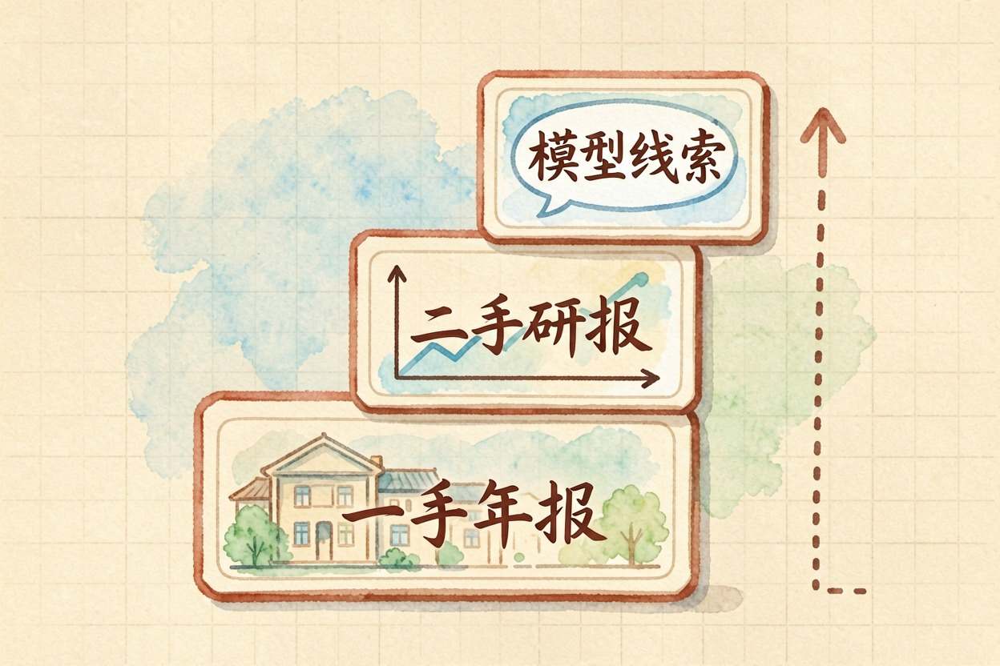
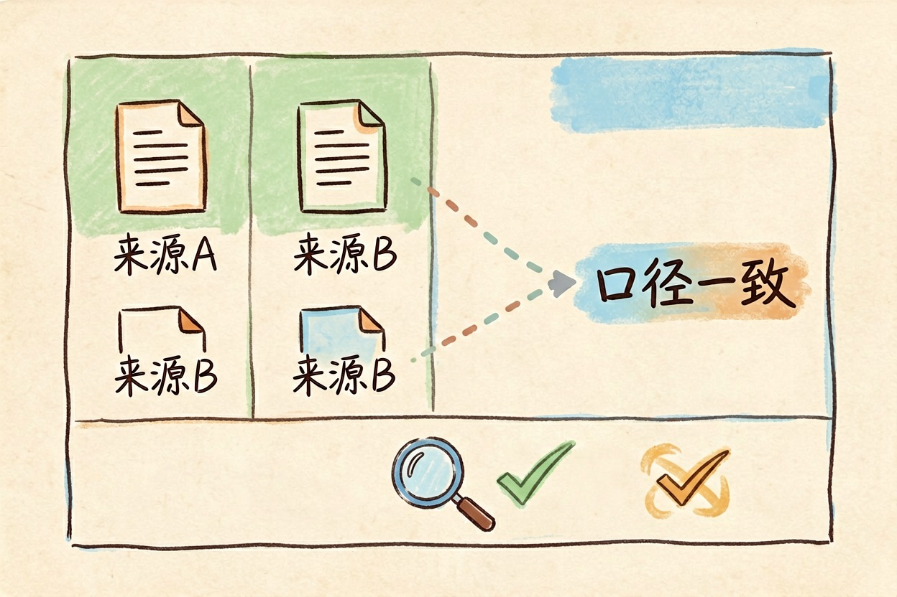
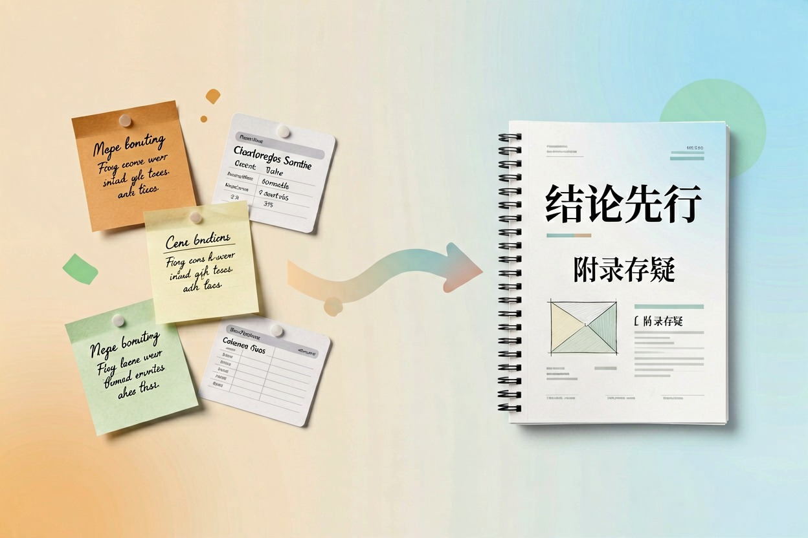

用 AI 做行业调研？信息源与交叉验证方法 — Learntide
模型十分钟能给你一份看着完整的行业分析，可里面的数字有几个经得起追问，这才是关键。
ai做行业调研：先把问题列成清单
ai做行业调研最容易犯的错，是上来就问「帮我分析一下这个行业」。这种问法拿到的永远是通用模板，换个行业名字照样成立。
动手前先写问题清单。市场有多大、增速靠什么驱动、玩家怎么分层、钱从哪里赚、门槛在哪、政策有没有变量。六到八个问题足够，每个问题都要能用一句话回答。
清单的作用是把调研切成可验收的小块。有了它，你才知道模型给的哪段有用、哪段是凑字数。市场调研用ai怎么做，起点就在这张清单上。
信息源分层：一手、二手和模型直答

把信息源分成三层，采信度依次递减。
第一层是一手材料：上市公司年报、招股书、行业协会年鉴、监管部门公开数据。这层的数字有披露责任，出错代价高，最值得信。
第二层是二手加工品：券商研报、行业媒体报道、咨询机构白皮书。有价值，但要看清口径是谁定的、样本怎么取的。
第三层是模型直接回答。它没有实时数据源时会用训练里的旧印象填空，年份和数值都可能错位。这层只能当线索，不能当证据。ai搜集行业信息的正确姿势，是让模型指路，你自己去一手层取数。
带联网检索的问答工具介于二三层之间，好处是给出处，具体表现可以看 Perplexity 搜索测评那篇。
交叉验证的三条硬规则

规则很简单，难的是每次都执行。
一，同一个数字至少要有两个互相独立的来源。两篇都引自同一份研报，那只算一个来源。
二，口径和年份必须跟着数字走。「市场规模」是按出货量算还是按收入算，差出一倍很常见。
三，模型给的数字一律回溯原文。找不到原文就删掉，宁可留空。
落到操作上，做一张核对表逐条过：
| 结论 | 数字 | 口径定义 | 年份 | 来源A | 来源B | 是否互相独立 | 状态 |
|------|------|----------|------|-------|-------|--------------|------|
| 行业增速 | | | | | | 是/否 | 已核 / 存疑 / 删除 |
填表规则：
1 来源A与来源B同源时，「是否互相独立」填否，状态降为存疑
2 口径定义写不出来的，一律标存疑，不许进报告正文
3 状态为删除的行保留在表里，写清删除原因，便于复盘从素材到报告框架

素材齐了再动笔。行业调研报告怎么写，框架其实很固定：结论先行、市场概况、竞争格局、驱动因素与风险、机会判断。
让模型按这个框架把核对表里状态为已核的内容填进去，存疑的单独放附录。这样正文的每句话背后都有据可查，评审提问时你翻得到。
调研素材建议沉进知识库，下次做相邻行业能复用一半，具体做法在搭建个人知识库那篇里。
常见误区与提醒
别把模型的流畅当成可靠。它写得越顺，你越容易放过里面的空洞判断，幻觉的识别技巧可以看避免 AI 幻觉那篇。
也别只看头部玩家。行业里真正的变化常常发生在腰部，而公开报道对腰部覆盖很少，这块得靠访谈补。
最后一句实在话：工具能从工具导航里慢慢挑，但ai做行业调研的成色，取决于你愿不愿意为每个数字回一次原文。
本文信息核对于 2026-08-08。AI 产品的价格、免费额度与功能变动频繁，实际以各工具官网当前说明为准。